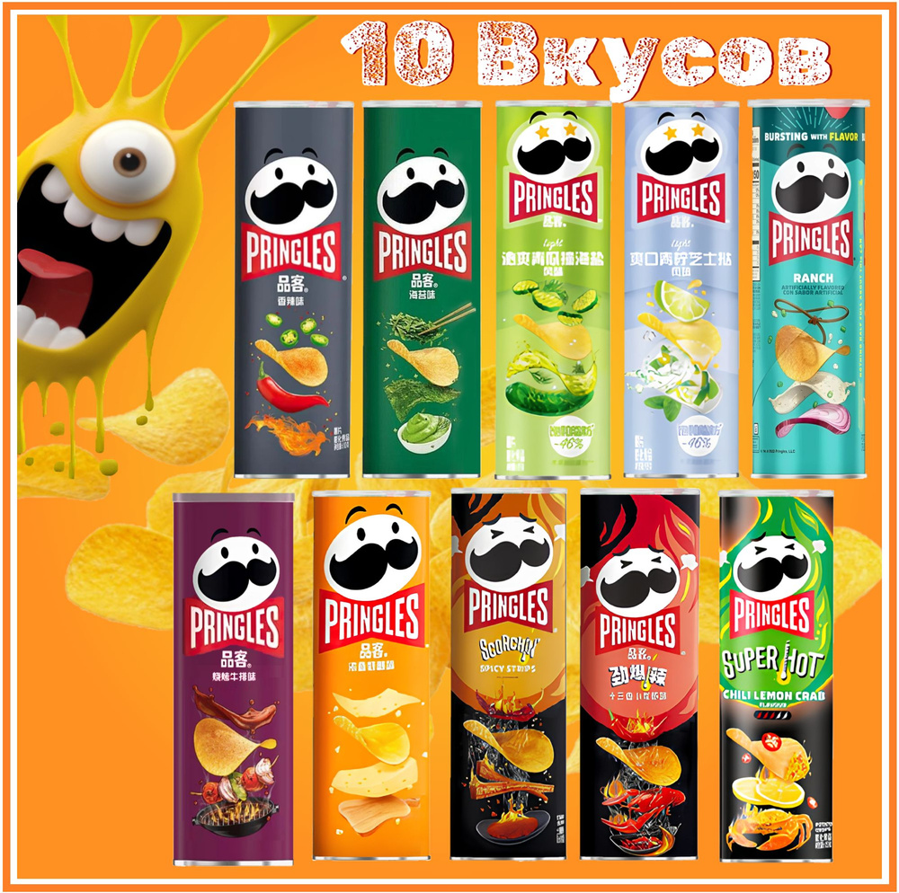
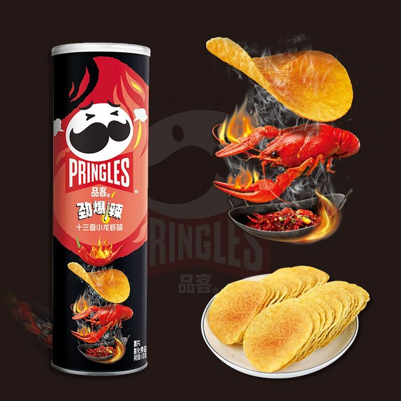
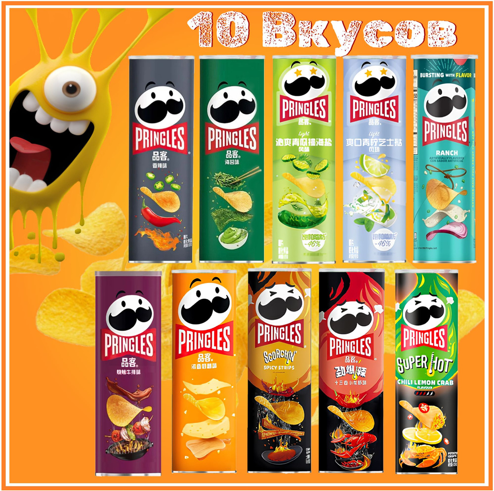
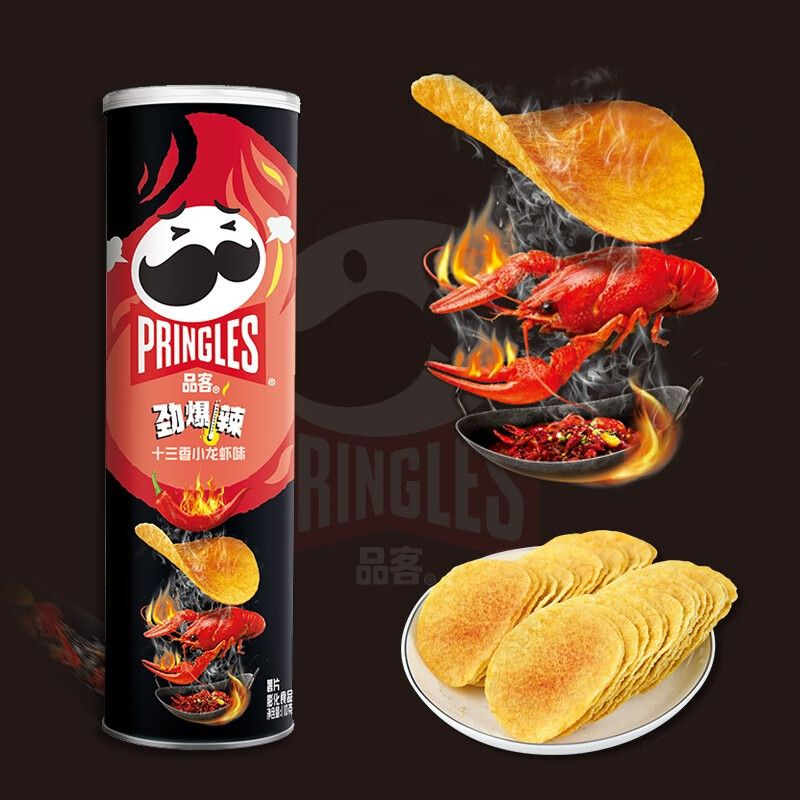

Pringles
о своей сути, Принглс – это не совсем чипсы, картофеля в них меньше половины, всего 42%, правильнее было бы назвать их картофельным печеньем. Кроме картофеля снэки состоят из муки (пшеничной, рисовой или кукурузной), жира и добавок. Вопреки сложившемуся мнению, Принглс не запекают, а обжаривают в горячем масле
 



вкусные чипсы
интересные вкусы создаются в Китае
вкусные чипсы
чипсы
2020 где купить?